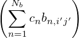
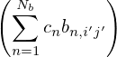

,
, ,
, ), then the left-hand side of Eq. (80) can be written
as
), then the left-hand side of Eq. (80) can be written
as In a curvilinear coordinate system (x1,x2,x3), there are two kinds of basis vectors: ∇xi and ∂r∕∂xi, with i = 1,2,3. These two kinds of basis vectors satisfy the following orthogonality relation:
|
| (80) |
where δij is the Kronical delta function. [Proof: Working in a Cartesian coordinate system (x,y,z) with
the corresponding basis vectors denoted by (,,), then the left-hand side of Eq. (80) can be written
as
 ∕∂xj = 0,∂
∕∂xj = 0,∂ ∕∂xj = 0,∂
∕∂xj = 0,∂ ∕∂xj = 0 since
∕∂xj = 0 since  ,
, , are
constant vectors independent of spatial location; the chain rule has been used in obtaining Eq.
(82)]
, are
constant vectors independent of spatial location; the chain rule has been used in obtaining Eq.
(82)]
[The cylindrical coordinate system (R,ϕ,Z) is an example of general coordinates. As an exercise, we can verify that the cylindrical coordinates have the property given in Eq. (80). In this case, x = x1 cosx2, y = x1 sinx2, z = x3, where x1 ≡ R, x2 ≡ ϕ, x3 ≡ Z.]
It can be proved that ∇xi is a contravariant vector while ∂r∕∂xi is a covariant vector (I do not prove this and do not bother with the meaning of these names, just using this as a naming scheme for easy reference).
The orthogonality relation in Eq. (80) is fundamental to the theory of general coordinates. The orthogonality relation allows one to write the covariant basis vectors in terms of contravariant basis vectors and vice versa. For example, the orthogonality relation tells that ∂r∕∂x1 is orthogonal to ∇x2 and ∇x3, thus, ∂r∕∂x1 can be written as
 | (83) |
where A is a unknown variable to be determined. To determine A, dotting Eq. (83) by ∇x1, and using the orthogonality relation again, we obtain
 | (84) |
which gives
 | (86) |
Similarly, we obtain
 | (87) |
and
 | (88) |
Equations (86)-(88) can be generally written
|
| (89) |
where (i,j,k) represents the cyclic order in the variables (x1,x2,x3). Equation (89) expresses the covariant basis vectors in terms of the contravariant basis vectors. On the other hand, from Eq. (86)-(88), we obtain
 | (90) |
which expresses the contravariant basis vectors in terms of the covariant basis vectors.
![∂r [( ∂xi) ( ∂xi) ( ∂xi) ] [ ∂x ∂ˆx ∂y ∂ ˆy ∂z ∂ˆz ]
∇xi ⋅∂x-= ∂x- ˆx+ ∂y- ˆy+ ∂z- ˆz ⋅ ∂x--ˆx+ x∂x--+ ∂x-yˆ+ y∂x--+ ∂x-ˆz +z ∂x--
j [( ) ( ) ( ) ] [ j j j j ] j j
= ∂xi ˆx+ ∂xi ˆy+ ∂xi ˆz ⋅ -∂x-ˆx+ 0+ ∂y-ˆy+ 0 + ∂z-ˆz+ 0 (81)
∂x ∂y ∂z ∂xj ∂xj ∂xj
∂xi∂x-- ∂xi-∂y- ∂xi-∂z-
= ∂x ∂xj + ∂y ∂xj + ∂z ∂xj
∂xi
= ∂x-- (82)
j
= δij,](tokamak_equilibrium126x.png)